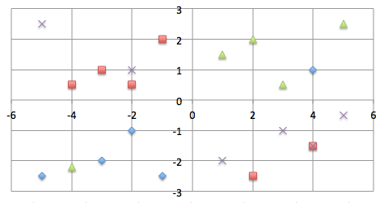
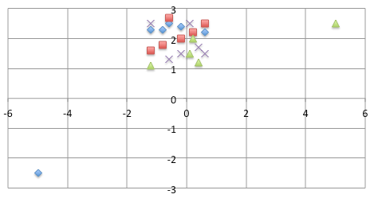
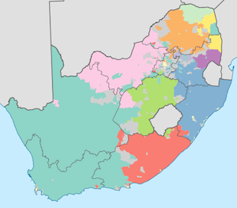
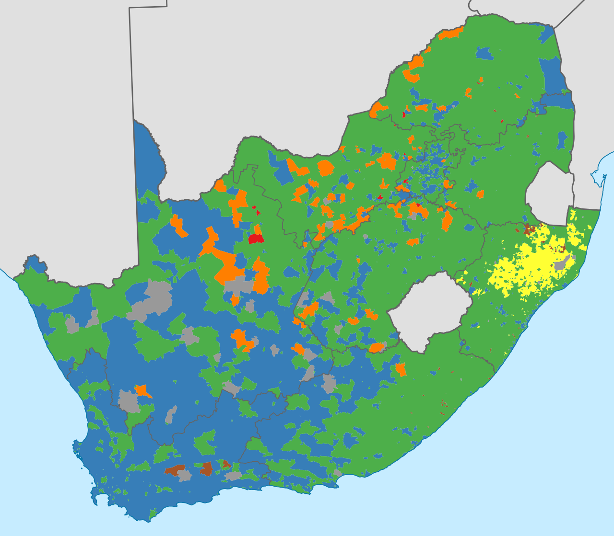
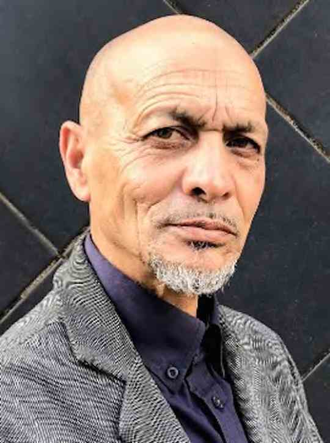

FPSA was registered in 2019. Work is ongoing to enter local elections. Provincial and national elections are not being entered at present, due to a lack of funding.
Page Contents
Demand for FPSA
Politics has two primary poles: imperialism and self-determination. Imperialists do not respect others' self-determination; they prefer large central governments. Self-determiners respect others' self-determination and prefer small central governments. In simple terms, voters either support big central governance (imperialism) or small central governance (self-determination).
The imperialist mindset is dominated by the idea of "One". Those with this mindset do not respect differences. For example, they think there should be only one type of education, one economic system (whether communism, capitalism, or socialism). They do not respect cultural differences. By contrast, self-determination thinkers respect each other's right to choose different systems and approaches in different regions.
FPSA is the only party promoting the smallest possible central government with the highest possible degree of decentralisation, to give self-determination to all who want it. A small central government should focus only on the universal matters that most voters agree on — those are what keep a country united. The most important universal matters are discouraging crime and maintaining a Defence Force. Large central governments divide nations because they focus exclusively on either liberalism or conservatism.
Those on both the left and right who respect others' self-determination can be united in one party — a party that arranges self-determination for both the left and the right.
Leaders must understand the cultures they lead. No one person can be a leader for all cultures. Within the framework of the South African Constitution, FPSA's policy is to decentralise regional governance to the greatest degree possible.
A small central government should focus on universals that unite different cultures — primarily the principle of not doing harm to others (as you yourself would not want harm done to you). Every person who lives by this principle strengthens the South African nation. Decentralised regional governments should respect this universal principle and focus on doing good for their communities according to their own cultures, because what constitutes "doing good" cannot be uniform across all of the world's different peoples.
The "left wing" and "right wing" metaphor means: if Liberals AND Conservatives do not both function, the metaphorical bird cannot fly. The left and right have different roles in society. During apartheid the left wing was suppressed. Currently the right wing is not functioning.
In the USA, the left has self-determination in Democratic (blue) states, and the right in Republican (red) states. In Switzerland, the left has self-determination in multilingual cantons, and the right in single-language cantons. Central governance that favours only one side creates imbalance. Decentralised governance allows money to be used locally, promoting development in rural as well as urban areas.
The left and right will remain divided for the foreseeable future, but they can exist within one united party. The mistake of apartheid was forced segregation — not self-determination itself.
FPSA's objective is to unite the left and right in one party while arranging self-determination for all in multicultural (left) and unicultural (right) regions, while allowing anyone to live anywhere, provided they respect the law.
Current right-wing parties represent primarily one minority group and cannot draw enough votes to overcome the imperialism of the majority parties. FPSA can draw more than 50% of the votes because it represents all groups in favour of self-determination. Corruption is out of control, and the current majority parties are unlikely to fix it. Dishonest groups currently control South Africa through criminal activity. The significant cultural differences in South Africa regarding how individuals relate to their groups is one of the most important reasons why more than one cultural system/region is necessary.
Funding of FPSA
Refer to the Fundraising Page for funding options, including bank deposits into FPSA's bank account. FPSA needs fundraisers — see the Jobs Page for more information.
Tax-deductible DiP brand tokens can be purchased. DiP tokens represent the values of conciliation, mediation, and dispute resolution.
A Metamask wallet connects to the donations frame below. Donations are tax-deductible:
Membership of FPSA
Ordinary Yearly Membership
Africahead administers FPSA memberships. A yearly recurring membership can be purchased for USD $2. This membership does not include a card.
Executive Membership
Executive membership must also be purchased to help fund FPSA. Executive membership gives the right to make proposals, attend General Meetings, and vote. Executive Members are also members of Houses in FPSA. Executive Membership can be inherited according to the FPSA Constitution. More information is available in the sections on the Executive Body (EB), Houses of FPSA, and in the FPSA Constitution (PDF).
Political Theory
Most people share a desire for self-determination, but many have been influenced by the idea of imposed "Unity", which relates to "Self" and despotism, and which hinders others' self-determination.
Politics has evolved from Imperialism to Democratic Imperialism (DI), and will continue to evolve toward Democratic Self-Determination (DSD). DI is identified primarily with left, middle, and right majorities and coalitions. In DSD politics, the primary choice is between imperialism (large central governance) and self-determination (small central governance) — not simply between left and right. All political parties can therefore be divided into imperialist and self-determination parties.
Political orientation can be plotted on a Matrix of Politics. FPSA represents all groups for their self-determination. The ideal would be that each individual attains self-determination — and this requires all people to respect universal laws, otherwise others' self-determination is not respected.
Matrix of Politics:
X-Axis: Liberal (−6) to Conservative (+6)
Y-Axis: Unity (−3) to Self-Determination (+3)


Reasons to Vote for FPSA
A primary decision for voters is choosing between enforcing multiculturalism across one "United" South Africa, or allowing self-determination for each group. These are two mutually exclusive conditions due to cultural dynamics. A multicultural culture has the right to self-determination in multicultural regions. However, multiculturalists should not have the right to claim all South African territory under their control alone.
There must be a balance between democratic rule and the self-determination of less powerful groups. Forced "Unity" (with a capital U) is a fallacy, because it creates despotic governments as the sovereign of "United" territories. True democracy respects the self-determination of all groups. FPSA is the only party drawing votes from all South African groups for the self-determination of each group and individual.
Switzerland offers the closest existing example of how FPSA promotes self-determination. Switzerland is currently divided into 26 cantons — some German, some French, one Italian, and some multicultural. Before colonisation, Africa was divided into language groups, much as most of Europe is today. Self-determination can be achieved democratically without war.
FPSA promotes self-determination for all, provided it does not infringe on others' self-determination. The universal principle of Love — not doing to others what you would not want done to yourself — is the foundation of social contract theory and criminal law.
FPSA can draw votes from all groups in South Africa, including the multicultural group, because of a constitution that supports all groups with different policies, convictions, and beliefs. FPSA leaders do not all need to agree on everything. The only required shared policy is self-determination for all groups, which implies mutual respect.
Priorities
Votes: Anyone wanting to contest upcoming by-elections as a councillor on behalf of FPSA should contact the party. Councillors have considerable freedom to make their own policy — left or right — in their regions.
Funding: FPSA is not funded by big business or wealthy individuals. Every donation helps. A funding model is used whereby tax-deductible tokens can be bought and traded on Ipparts Exchange (IPPAEX), a new cryptocurrency exchange currently in development.
Constitution of FPSA and SA
The FPSA Constitution (PDF) explains its primary objectives. Details were intentionally kept flexible to allow FPSA to attain its objectives while respecting the self-determination of all. These objectives must be achieved through negotiations among different groups seeking self-determination. This webpage contains proposals that can be debated within FPSA, provided the FPSA Constitution and the South African Constitution are respected. The FPSA Constitution may not be changed, except for clarification — thereby protecting the idea of self-determination for all.
Any party or political movement agreeing to the following two policies can join FPSA:
1) Self-determination for all.
2) No promotion of war.
South Africa's Constitution can be adjusted to take new realisations into account, but care must be taken not to disturb important agreements reached during the 1994 transition.
Executive Body (EB) of FPSA
As of 23 June 2021, the EB consisted of 19 individuals with seats on the Executive Body — 10 Black, 6 White, 2 Coloured, and 1 Indian. Seats can be purchased, sold, and inherited. Until further notice, an individual can become an EB member if they pass scrutiny and pay more than R1,000 to the party.
The EB is not a group representing a specific part of society — a single-group body would lapse back into imperialism. EB members divide themselves into different Houses, but on General Meetings they vote as a party, with each seat representing one vote. If no existing House suits an executive member, new Houses can be formed.
The key difference between FPSA and Parliament: FPSA represents multiple groups but excludes imperialism over "all". Parliament currently includes imperialism over all — for example, all of South Africa is officially multicultural and left-leaning on paper, yet in reality many groups are conservative. FPSA excludes this kind of "all-or-nothing" imperialist approach.
The EB must arrange self-determination for all who want it, locally, with the knowledge and assurance that others' self-determination is respected nationally and internationally.
Leadership of FPSA
FPSA accepts the leadership of regions by individuals — including those with traditional authority — provided they respect self-determination for all groups. Real self-determination fundamentally means respecting others' self-determination too. Section 143 of the South African Constitution makes reference to traditional leaders. Separate provincial constitutions will say more about this.
Leadership must develop by having influential representatives of all the different groups of all the communities of the South African nation come forward to fill and form different Houses, representing different groups in FPSA.
Leadership has two aspects, rarely found in the same person. Good ideas are a result of honesty — but honest people are not always the most influential. Influential leaders communicate good ideas and do networking. FPSA will therefore have two types of leaders: those who work in the background with good ideas, and well-known leaders who communicate policy to voters. All Houses should ideally have both types.
The title of President will be rotated and shared among the members of a federal council, because a single president often divides parties and nations with diverse cultures. Presidential power will thus be distributed to allow more decentralised governance.
Policy of FPSA
General Policy
FPSA represents different cultures for self-determination. Therefore FPSA cannot require all members to do the same things. FPSA unites in not doing harm — because not doing evil, as recognised in criminal law, is universal. The different Houses of FPSA can each unite in doing positive things for their own culture.
Self-determination is an internationally recognised democratic right. Achieving self-determination peacefully is more likely when different groups work together in one party to oppose imperialism — the major enemy of self-determination. Acceptable criteria for peaceful division exist: when these criteria are respected, people from different backgrounds can achieve self-determination without war. Switzerland is an example of this, having peacefully created its 26th canton through secession.
Land Policy
A letter was submitted to Parliament to object to planned Expropriation Without Compensation (EWC). FPSA's policy is that South Africa should first divide into multicultural and unicultural regions with self-determination before further land reform takes place. If EWC does take place, it should be combined with a resettlement programme that considers the likely distribution of different cultures in future.
In principle, EWC should not take place — partly because it would break agreements negotiated for the 1994 transition. The only shared policy among FPSA's leaders is that governance of land must be divided. How that division will take place, and where borders will be, are matters for negotiation. Division of land does not mean people will have to move if they do not want to. In Europe, people can live anywhere while governance of land is divided into unicultural and multicultural regions.
Moving is not a prerequisite for dividing a country's governance. Division can happen only with regard to governance, without requiring people to move. Most local governments are currently dysfunctional, partly because of the different cultures and languages represented in each council. Much conflict would be reduced if each region were governed by a single language, cultural, or multicultural group.
Proposal for Discussion: Solving the Land Problem
Decentralising governance for the self-determination of all groups is a long-term objective. This proposal recognises that all South Africans may vote; universal suffrage was established in 1994 without war. Threatening with war disqualifies anyone from being a leader in FPSA.
The practical proposal for the current reality is: the SARB prints money and gives it to district municipalities, which apply it according to their culture. This is preferable to EWC, which risks destroying the currency as happened in Zimbabwe.
Steps to Determine Self-Determination
Language Map of South Africa
Language, cultural, and multicultural areas already exist in South Africa. The following language map, produced by Stats SA from 2011 census data, was sourced from Wikipedia.

The district municipal map of South Africa at Wikipedia is also a useful reference.

Defence
South Africa should have a single Defence Force, working together with a Federal Police Force. It should use defensive rather than offensive approaches. One of the most important considerations is the extent to which central governance should protect individuals against criminal action by groups in different regions, since different regions may have different legal systems. Federal Police action against criminality can be combined with defence, because criminal action against a community can relate to hostile behaviour by outsiders.
Foreign Policy
FPSA proposes that South Africa should have no foreign enemies and no foreign allies, because the South African nation — divided as it is into different communities and groups — cannot afford to be further divided by foreign interests. This could imply withdrawing from BRICS and the Commonwealth, but such decisions cannot be made properly without full involvement and reflection.
South Africa is large enough to be independent from foreigners, given good governance and cooperation among regions in one national market, as prescribed by the South African Constitution.
South Africa should be part of a well-functioning international group of countries applying universal laws about not doing evil to others — the foundation of criminal law and social contract theory.
Domestic Policy
The most important function of government is enforcing universal laws — those that every group can agree to — because universal laws unite a nation. When respect for universal laws falters, a nation becomes divided in destructive ways. One of the most important tasks will be forming a force whose sole purpose is protecting each individual against ostracism and exclusion in at least one region. Domestic policy is simply to give each region, group, and community the greatest possible self-determination within the national and international context, against imperialist control.
Economic Policy
The "left wing" (liberal side) and "right wing" (conservative side) of an economy must both function. During apartheid, only the right wing functioned. Currently, only the left wing functions.
FPSA promotes economic independence for each region wherever possible. The main difference between FPSA's national economic policy and those of current parties is that current major parties are controlled by international monetary forces. The result is that capital is not being created in South Africa — it is primarily borrowed from abroad or invested by foreigners. Current political parties are effectively selling South Africa to foreign interests.
Capital forms from two human sources: ideas and labour. Intequity (Capital of Ideas) is a new concept that gave rise to Intequinism, the philosophical foundation of FPSA. All groups and individuals are encouraged to form new currencies that balance the Labour Theory of Value with the value of ideas. Refer to Ipparts Exchange (IPPAEX) for more information.
Taxation will, as far as possible, be abolished and replaced by money creation, while central government is being minimised.
Houses of FPSA
Leaders must come forward and form Liberal, Conservative, and other Houses, as needed to govern South Africa well.
It seems likely that Houses will form representing regions, similar to the role of municipalities. When FPSA chooses Members of Parliament, they will probably represent Houses, which in turn represent regions and municipalities.
Elections
2021 Local Election Candidates

Mr. Hamid Adams
BA (Philosophy)
eThekwini
Mr. Marquard Pienaar
BRek (Hons), MPhil (Philosophy)
Tshwane
FPSA did not win seats in the 2021 local elections. In Tshwane, approximately 1,350 additional votes across all ballot papers would have been needed to secure a seat on the council.
Slogan for 2021 Local Elections and By-Elections
★ Divide Municipal Funds! ★
Much money has been stolen from municipalities because of centralised control of funds. If each municipality's funds were divided into separate bank accounts, it would not be possible to steal from a single central account. Each ward could have its own bank account requiring the signatures of ward councillors plus one additional signatory before any payments are made.
Download the 2021 election manifesto (PDF).
FPSA needs candidates in all municipalities for the future. Refer to the Jobs page.
The Future
Intequinism, the philosophical foundation of FPSA, does not prioritise achieving goals through despotism, as imperialism does. An objective is still relevant, however, and will adjust to circumstances. Nationally, the objective is self-determination for all unicultural and multicultural groups in different regions, for those who want it.
If this policy were universalised, self-determination regions would become smaller, but central governance areas could become larger. For example, because many Zimbabweans already live and work in South Africa, the two countries could eventually form one national territory with many self-determination regions — and in that new nation, the central government would be much smaller than any current government in either country.
Promoting self-determination for all groups who want it is a new political movement, because historically self-determination was promoted only for "Self", often through violence. It is foreseen that Democratic Imperialism (DI) will transition to Democratic Self-Determination (DSD), just as kingdoms transitioned to DI.
A webpage has been created for Self-Determination International (SDI), where different new DSD groups and parties forming internationally can cooperate to achieve the goal of DSD for all. Real self-determination can only be achieved if it is promoted for all groups worldwide — otherwise it is merely imperialism.
Projects
Notices
Community
Social Media
FPSA can be discussed and followed on the following platforms:
Disqus is used primarily for conciliation, mediation, and dispute resolution, in line with the Divided Party (DiP) brand tokens listed on IPPAEX.